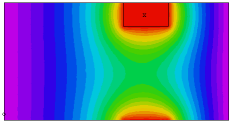

|
3d_zperiodic |

  
|
|
3d_zperiodic |
|
{ 3D_ZPERIODIC.PDE
This example shows the use of FlexPDE in 3D applications with periodic
boundaries in the Z-direction.
For Z-periodicity, we merely precede the EXTRUSION statement by the
qualifier PERIODIC. The top and bottom surfaces are assumed to match,
and values are made equal on the two surfaces.
In this problem we have a heat equation in an irregular figure.
An off-center source heats the body, while all the vertical surfaces are
held at U=0.
}
title '3D Z-PERIODIC BOUNDARY TEST'
coordinates cartesian3
Variables u
definitions k = 0.1 h=0 x0=0.3 y0=-0.2 x1=0.7 y1 = 0.2
equations u : div(K*grad(u)) + h = 0
periodic extrusion z=0, 0.8, 1
boundaries Region 1 start(-1,-1) value(u)=0 line to (1,-1) arc(center=-1,0) to (1,1) line to (-1,1) arc(center=-3,0) to close
|
 |
{ an off-center heat source in layer 2 provides the asymmetric
conditions to demonstrate the periodicity of the solution }
limited region 2
layer 2 h=10 k=10
surface 1 { include insert patch in surface 1 so surfaces match }
start(x0,y0) line to (x1,y0) to (x1,y1) to (x0,y1) to close
monitors
contour(u) on y=0
plots
grid(x,z) on y=0
contour(u) on y=0 painted
end